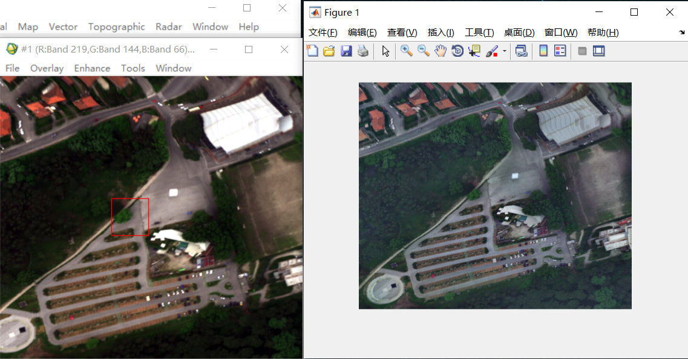
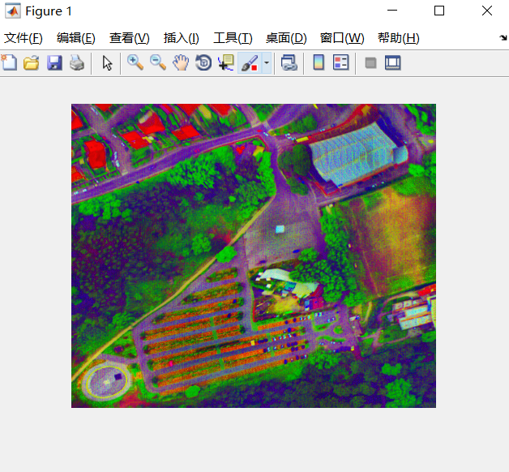

Welcome to exchange and study！
Using matlab to display hyperspectral images has always been a difficulty, and it has also troubled many people. Two methods are currently found to display the hyperspectral image as a color image, the specific code is as follows.
eg.1
Main function
load('Viareggio.mat') % 导入需要显示的影像
[rgb] = func_hyperImshow(hsi,[219,144,66]); % func_hyperImshow(3D高光谱图像,[R,G,B])
Custom function 1
function [rgb] = func_hyperImshow( hsi, RGBbands )
%% Hyperspectral Image color display
% Author: Zephyr Hou
% Time: 2019-12-02
% Function Usage
% Input:
% hsi—the 3D hyperspectral dataset with the size of rows x cols x bands
% RGBbands— the RGB bands to be displayed, with the format [R G B]
% Output:
% rgb- the finual result with the RGB bands with the size of (rows x cols x 3)
%% Main Function
hsi=double(hsi);
[rows, cols, bands] = size(hsi);
minVal =min(hsi(:));
maxVal=max(hsi(:));
normalizedData=hsi-minVal;
if(maxVal==minVal)
normalizedData=zeros(size(hsi));
else
normalizedData=normalizedData./(maxVal-minVal);
end
hsi=normalizedData;
[rows, cols, bands] = size(hsi);
if (nargin == 1)
RGBbands = [bands round(bands/2) 1];
end
if (bands ==1)
red = hsi(:,:);
green = hsi(:,:);
blue = hsi(:,:);
else
red = hsi(:,:,RGBbands(1));
green = hsi(:,:,RGBbands(2));
blue = hsi(:,:,RGBbands(3));
end
rgb = zeros(size(hsi, 1), size(hsi, 2), 3);
rgb(:,:,1) = adapthisteq(red); % Adaptive histogram equalization
rgb(:,:,2) = adapthisteq(green);
rgb(:,:,3) = adapthisteq(blue);
imshow(rgb); axis image; % 保持图像的显示比例，其中axis为坐标轴的控制函数。
end
As shown in the figure 1, the left is the image displayed in true color format in envi, and the right is the specific image displayed using this custom function.
eg.2
Custom function 2
function [rgb] = hyperImagesc(img, bands)
%UNTITLED1 Summary of this function goes here
% Usage: plotAvirisRgb(img, bands)
[h, w, p] = size(img);
if (nargin == 1)
bands = [1 round(p/2) p];
end
blue = img(:,:,bands(1));
green = img(:,:,bands(2));
red = img(:,:,bands(3));
rgb = zeros(size(img, 1), size(img, 2), 3);
rgb(:,:,1) = hyperNormalize(red);
rgb(:,:,2) = hyperNormalize(green);
rgb(:,:,3) = hyperNormalize(blue);
rgb = decorrstretch(rgb); % 对比度拉伸函数
red = rgb(:,:,1);
green = rgb(:,:,2);
blue = rgb(:,:,3);
rgb(:,:,1) = adapthisteq(red);
rgb(:,:,2) = adapthisteq(green);
rgb(:,:,3) = adapthisteq(blue);
imshow(rgb); axis image;
end
The embedded function (regularization functions) is as follows:
function [ normalizedM ] = hyperNormalize( M )
%HYPERNORMALIZE Normalized data to be in range [0, 1]
% hyperNormalize Normalizes data to be in range [0, 1]
%
% Usage
% hyperNormalize(M)
% Inputs
% M - Input data
% Outputs
% normalizedM - Normalized data
minVal = min(M(:));
maxVal = max(M(:));
normalizedM = M - minVal;
if (maxVal == minVal)
normalizeData = zeros(size(M));
else
normalizedM = normalizedM ./ (maxVal-minVal);
end
The display result using the custom2 is shown in figure 2, as follow.
